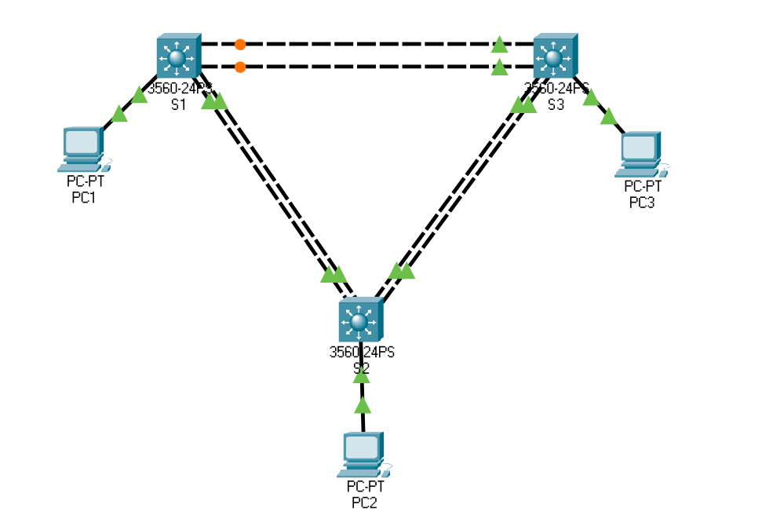

Configuring Switch redundancy with Etherchannel¶
Etherchannel Protocols¶
Etherchannel protocols are
{kind=link}
{kind=link}
Configuration¶
{kind=link}
S1¶
S1(config) interface vlan 1
S1(config-if) ip address 10.0.0.5 255.255.255.0
S1(config-if) no shutdown
S1(config-if) exit
S1(config) interface range f0/19 - 20
S1(config-if) channel-group 3 mode passive
S1(config-if) exit
S1(config) interface range fa0/21 - 22
S1(config-if) channel-group 1 mode active
S1(config-if) exit
S1(config) interface port-channel 3
S1(config-if) switchport trunk encapsulation dot1q
S1(config-if) switchport mode trunk
S1(config-if) exit
S1(config) interface port-channel 1
S1(config-if) switchport trunk encapsulation dot1q
S1(config-if) switchport mode trunk
S1(config-if) exit
S2¶
S2(config) interface vlan 1
S2(config-if) ip address 10.0.0.6 255.255.255.0
S2(config-if) no shutdown
S2(config-if) exit
S2(config) interface range f0/23 - 24
S2(config-if) channel-group 2 mode desirable
S2(config-if) exit
S2(config) interface range fa0/21 - 22
S2(config-if) channel-group 1 mode active
S2(config-if) exit
S2(config) interface port-channel 2
S2(config-if) switchport trunk encapsulation dot1q
S2(config-if) switchport mode trunk
S2(config-if) exit
S2(config) interface port-channel 1
S2(config-if) switchport trunk encapsulation dot1q
S2(config-if) switchport mode trunk
S2(config-if) exit
S3¶
S3(config) interface vlan 1
S3(config-if) ip address 10.0.0.7 255.255.255.0
S3(config-if) no shutdown
S3(config-if) exit
S3(config) interface range f0/19 - 20
S3(config-if) channel-group 3 mode passive
S3(config-if) exit
S3(config) interface range fa0/23 - 244
S3(config-if) channel-group 2 mode desirable
S3(config-if) exit
S3(config) interface port-channel 3
S3(config-if) switchport trunk encapsulation dot1q
S3(config-if) switchport mode trunk
S3(config-if) exit
S3(config) interface port-channel 2
S3(config-if) switchport trunk encapsulation dot1q
S3(config-if) switchport mode trunk
S3(config-if) exit